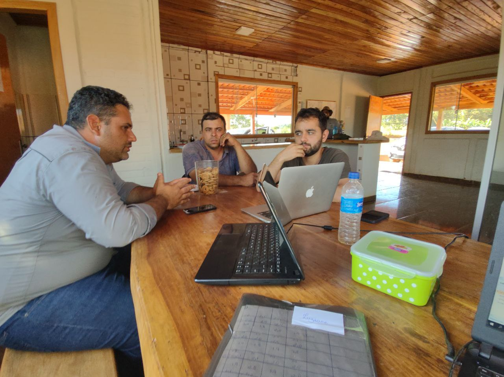

Menos custo
Mão de obra bem distribuída e processos claros reduzem desperdício, retrabalho e hora parada.
Acompanhamento individual com Gabriel Lage para organizar a equipe da sua fazenda, cortar custos e tirar do gestor a sobrecarga do dia a dia.

A Mentoria Banana 360 é um acompanhamento individualizado e personalizado para implantar métodos de gestão operacional e de mão de obra em fazendas de banana. Ela parte do diagnóstico da sua equipe e termina com a rotina funcionando, com Gabriel ao seu lado durante 8 meses, on-line, para colocar a mão na massa.
É o mesmo método que Gabriel criou e aplica na gestão de cerca de 300 hectares de banana da Banarica e da Ama Agro, e que já levou para mais de 30 fazendas como consultor.
Levantamento de como a fazenda funciona hoje: funções, rotina, gargalos e onde o dinheiro está ficando na mesa.
Plano personalizado para reorganizar as rotinas da equipe, com prioridades definidas junto com você.
Encontros on-line durante 8 meses para aplicar o método Banana 360, corrigir a rota e tirar dúvidas.
Equipe trabalhando com padrão, indicadores à vista e o gestor livre para pensar no negócio.
Mão de obra bem distribuída e processos claros reduzem desperdício, retrabalho e hora parada.
A equipe passa a funcionar com rotina e responsáveis definidos, sem precisar de você em cada decisão.
Metas, feedback e reconhecimento: o mesmo modelo de gestão de pessoas aplicado na Banarica.
Nada de receita pronta: o plano é construído a partir do diagnóstico da sua fazenda.
Oito meses de contato direto com o Gabriel para colocar o método em prática.
Mais de 19 anos na banana e cerca de 3.000 hectares acompanhados como consultor.
As vagas são limitadas para que cada fazenda tenha atenção individual. Entre na lista de espera e seja avisado primeiro.